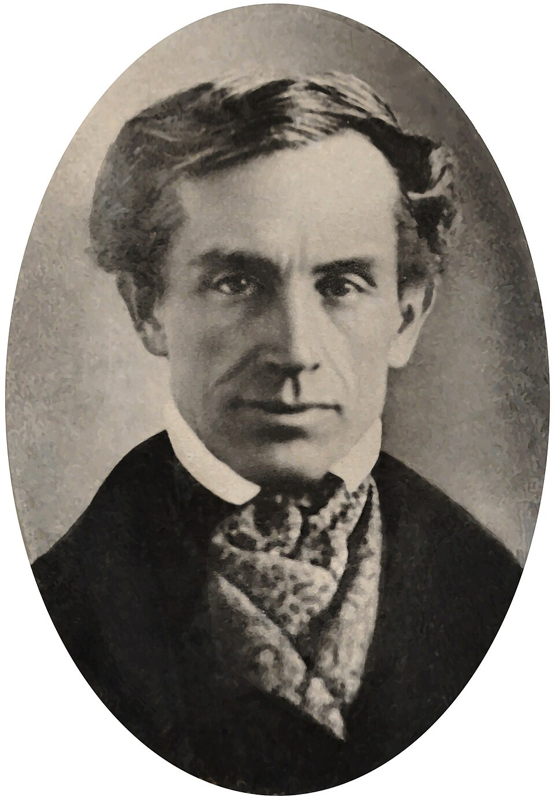

Morse escribe con el rayo: un mensaje vuela de Washington a Baltimore por un alambre
Desde la sala del Tribunal Supremo, el profesor Samuel Morse envió por su telégrafo eléctrico la frase «Lo que Dios ha obrado», y Baltimore la devolvió al instante desde sesenta y cuatro kilómetros de distancia. Por primera vez en la historia, la noticia corre más rápido que el caballo.

Ante un corro de congresistas y damas reunidos en la sala del Tribunal Supremo, en el Capitolio, el profesor Samuel F. B. Morse pulsó esta mañana la llave de su telégrafo eléctrico y escribió, con chispas y no con tinta, un versículo de las Escrituras: «What hath God wrought», lo que Dios ha obrado. A sesenta y cuatro kilómetros de allí, en el depósito del ferrocarril de Baltimore, su colaborador Alfred Vail leyó la frase en una tira de papel rayada por puntos y líneas, y la devolvió íntegra segundos después. Los presentes comprobaron con sus relojes lo increíble: la palabra había ido y vuelto antes de que un jinete alcanzara a ensillar.
El autor del prodigio no es hombre de gabinete científico, sino pintor de retratos, y de los buenos. La idea lo asaltó hace doce años, en la travesía de regreso de Europa a bordo del paquebote Sully, oyendo conversar sobre el electroimán: si la electricidad recorre cualquier longitud de alambre en un instante, razonó, no hay motivo para que la inteligencia no viaje con ella. Siguieron años de penuria en un desván de Nueva York, un alfabeto de puntos y rayas que cualquier oído adiestrado descifra, y la ayuda decisiva del mecánico Alfred Vail y del profesor Gale, que convirtieron la ocurrencia en aparato.
El Congreso tardó más en convencerse que el alambre en transmitir. La partida de treinta mil dólares para la línea de ensayo se votó el año pasado por apenas seis votos, entre burlas de señores diputados que propusieron destinar la mitad de los fondos a experimentos de mesmerismo, pues tan quimérico les parecía lo uno como lo otro. Los trabajos mismos empezaron torcidos: se quiso enterrar el alambre en cañerías de plomo y hubo que desenterrarlo, perdido buen dinero, hasta que se optó por tenderlo al aire libre sobre postes de castaño, siguiendo la vía del ferrocarril de Baltimore y Ohio.
La frase inaugural no la eligió el inventor sino una señorita, Annie Ellsworth, hija del comisario de patentes, que fue quien le llevó al profesor, el año pasado, la noticia de que el Congreso votaba al fin los fondos; Morse le prometió en pago el primer mensaje de la línea, y ella escogió el versículo del Libro de los Números. El alambre, por lo demás, ya había dado muestras de su poder: semanas atrás, a medio tender, anunció en Washington la candidatura del señor Clay, proclamada en Baltimore, una hora antes de que llegara el tren, y hubo quien se negó a creerlo hasta palpar la locomotora.
Los entendidos hablan ya de tender líneas a Nueva York, a Boston, acaso de costa a costa; los más audaces sueñan con un cable bajo el océano, que los prudentes juzgan delirio. Puede que no lo sea: desde aquel ingenio de Maguncia que multiplicó la palabra escrita, y del que este diario dio cuenta hace ya casi cuatro siglos, no se veía invento con tantas ganas de achicar el mundo. Quede para los años venideros medir lo que cambia un país cuando la noticia deja de viajar a lomo de caballo: el comercio, la guerra, la política y este mismo oficio de contar el día ya no serán los de ayer.